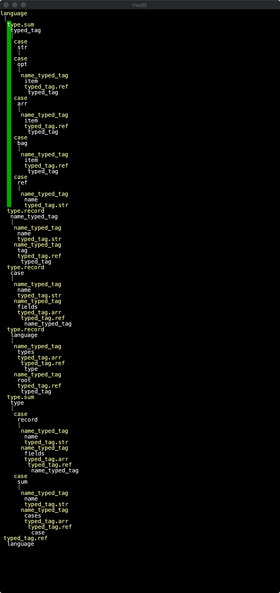

Programming language compilers normally parse texts into ASTs, and an alternative is to let users to directly edit the AST.
We then need a editor for AST. We want our editor to be a framework for all ASTs. So first we need a way to specify an AST. A basic structure is like this:
A language is a sequence of named types, and a type tag of the root type.
case class Language(types: Seq[Type], root: TypeTag)
Type is just sum and product:
sealed trait Type
object Type {
case class Record(name: String, fields: Seq[NameTypeTag]) extends Type
case class Sum(name: String, cases: Seq[Case]) extends Type
}
case class NameTypeTag(name: String, tag: TypeTag)
case class Case(name: String, fields: Seq[NameTypeTag])
And TypeTag is collections or a reference to a named tag, or a primtive type, like Str:
sealed trait TypeTag
object TypeTag {
case object Str extends TypeTag
case class Opt(item: TypeTag) extends TypeTag
case class Arr(item: TypeTag) extends TypeTag
case class Bag(item: TypeTag) extends TypeTag
case class Ref(name: String) extends TypeTag
}
Then it just so happens this framework is able to express it's own grammar. With some basic UI and basic key-binding, we will be able to create a syntax tree editor, and then bootstrap to edit the meta-syntax.
For example, Type in it's own meta language is:
val type = Type.Sum(
"type",
Seq(
Case("record", Seq(
NameTypeTag("name", TypeTag.Str),
NameTypeTag("fields", TypeTag.Arr(TypedTag.Ref("name_type_tag"))),
)),
Case("sum", Seq(
...
))
)
)
The whole thing kind looks like this:
The idea of a generic framework for structural editor is largely inspired by JetBrains MPS.